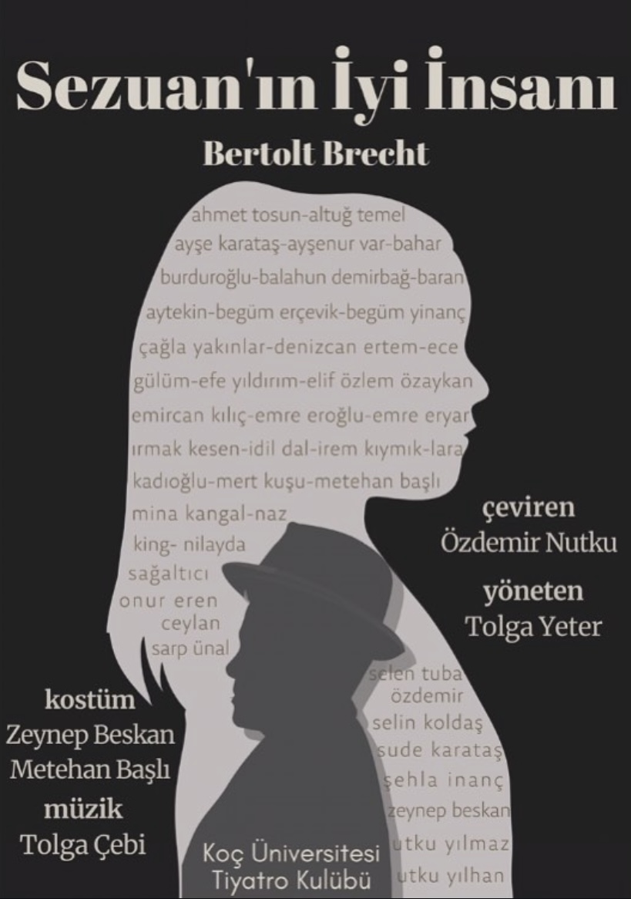
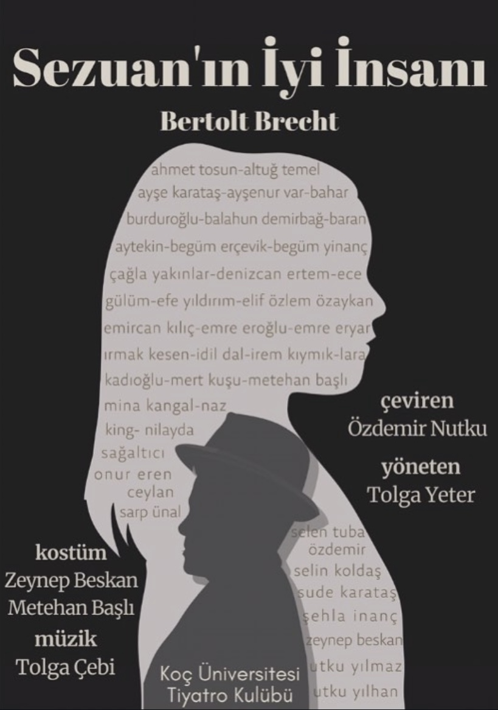

BİZ KİMİZ?
Koç Üniversitesi Tiyatro Kulübü (KUTİY), üniversitemizin en köklü ve aktif öğrenci kulüplerinden biridir. Amacımız, tiyatronun birleştirici gücüyle kampüs içinde sanatsal bir alan yaratmak, öğrencilerimize sahne sanatları alanında kendilerini geliştirme fırsatı sunmak ve unutulmaz performanslarla izleyicilerimizle buluşmaktır. Oda tiyatromuzda hem klasik hem de modern oyunlara kendi yorumumuzu katarak yeni ve postmodern bir sahne estetiği arayışındayız.